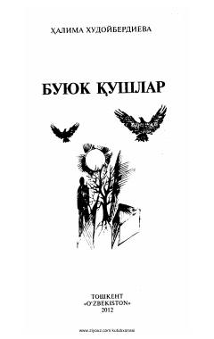

BQHalima Xudoyberdiyevaning insoniy tuyg'ular va hayotiy kechinmalarga boy she'riy to'plami.
Ushbu to'plam O'zbekiston xalq shoirasi Halima Xudoyberdiyevaning lirik she'rlarini o'z ichiga oladi. Kitobda insoniy kechinmalar, hayotiy iztiroblar va quvonchlar badiiy obrazlar orqali yorqin ifodalangan.